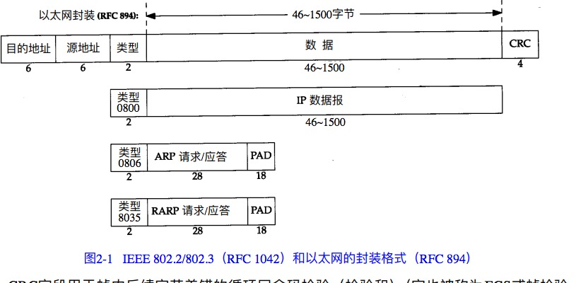
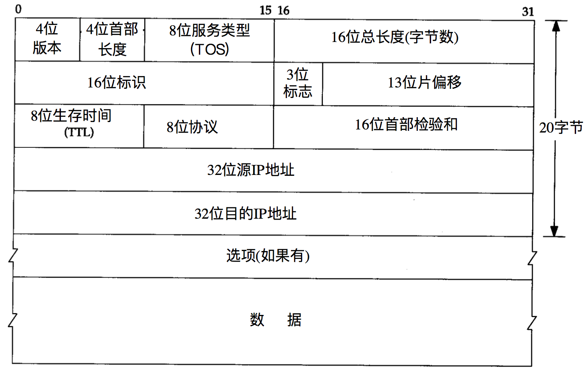
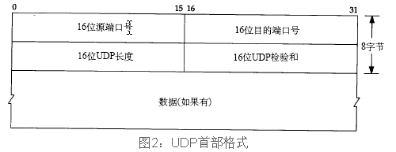
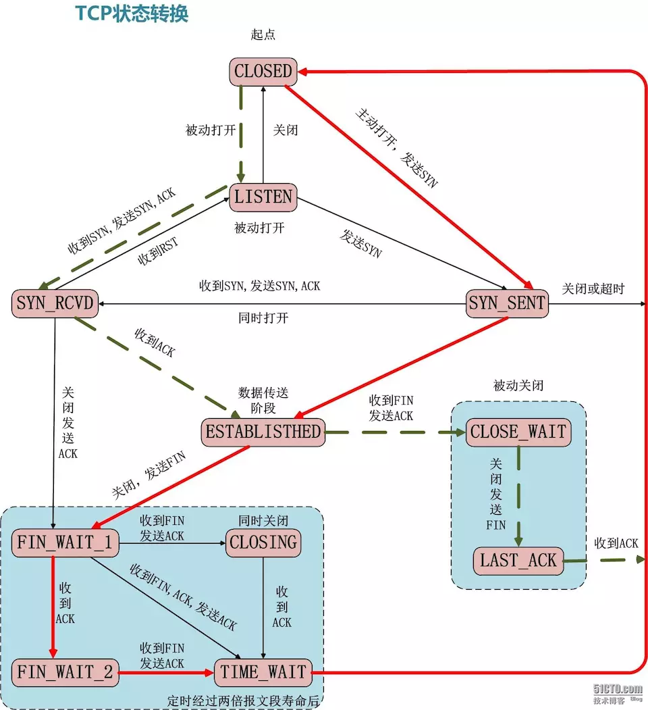
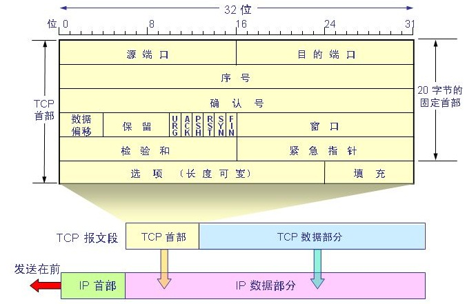

tcp-ip 协议
1. 概述
链路层、网络层、运输层、应用层（下层->上层）。
目的主机收到以太网数据帧，数据由协议栈由底部上升时，同时去掉各层协议加上的报文首部。这个过程称作分用。
2. 链路层
- 为 IP 模块发送和接收数据报
- 为 ARP 模块发送 ARP 请求和 ARP 应答
- 为 RARP 发送 RARP 请求和接收 RARP 应答

以太网数据部分最少为 26 字节，不足的部分插入填充（pad）字节 CRC 字段用于帧内后续字节差错的循环冗余码校验 以太网数据帧长度有限制，最大值 1500 字节，称为 MTU，最大传输单元
3. IP 网际协议

- 4 位首部长度 表示首部包含多少个 32bit 的数据，即最多 32/8*15=60 个字节
- TOS 服务类型 3bit 的优先权子字段，4bit 的 TOS 子字段，和 1bit 未用位必须置 0
- 最小时延 如 telnet、Rlogin
- 最大吞吐量 如 FTP
- 最高可靠性
- 最小费用
- 16 位总长度 所以 ip 数据报最大可达 65535 字节
- TTL 数据报可以经过的最多路由数
- 首部校验和 根据 IP 首部
不可靠、无连接 网络字节序，big endian
网络地址被划分为为 A/B/C/D/E 五类；子网掩码，32 位，网络号全是 1，主机号是 0。根据 ip 地址的前几位可以判断属于哪一类地址，进而可以判断哪些是网络号和主机号。因为主机号可能会进一步分为子网络号和主机号，所以需要根据子网掩码来判定子网络号和主机号。同一子网内（子网掩码网络号相同）的主机是可以互相通信的。广播地址是主机号全为 1 的地址。
三个特殊地址，一个是广播地址，一个是网络号，一个是网关地址，剩下的才是可以分配的主机地址。
计算数据报 IP 校验和，首先把校验和字段设置为 0，对首部每个 16bit 进行二进制反码求和，结果存在校验和字段中

- A 8 位网络号+24 位主机号
- B 16 网络号+16 位主机号
- C 24 位网络号+8 位主机号
4. ARP 地址解析协议

从逻辑 Internet 地址到对应的物理硬件地址进行翻译。
32 位 internet 地址 -> 48 位以太网地址，ARP 48 位以太网地址 -> 32 位 internet 地址,RARP
同一网络上的主机是通过 48 bit 的以太网地址来确定目的接口的，不是通过 ip 地址而是通过 mac 地址来通信。 每个主机有个 arp 高速高度缓存（保存 ip 地址和 mac 地址的映射） 通过广播，来获取目的 ip 地址的 mac 地址，who-has。
# arp 请求是广播的，arp 响应直接发送到请求端主机的
$ tcpdump -nni en0 arp
tcpdump: verbose output suppressed, use -v or -vv for full protocol decode
listening on en0, link-type EN10MB (Ethernet), capture size 262144 bytes
# 路由器发出请求
13:55:56.052672 ARP, Request who-has 192.168.10.167 tell 192.168.10.1, length 46
# 我本机的响应
13:55:56.052727 ARP, Reply 192.168.10.167 is-at f4:5c:89:8f:aa:65, length 28
13:55:58.304054 ARP, Request who-has 192.168.10.1 tell 192.168.10.180, length 28
13:56:41.519468 ARP, Request who-has 192.168.10.167 tell 192.168.10.1, length 46
# 我本机执行 ping 192.168.10.244
14:04:18.887179 ARP, Request who-has 192.168.10.244 tell 192.168.10.167, length 28
14:04:19.888785 ARP, Request who-has 192.168.10.244 tell 192.168.10.167, length 28
5. RARP 逆向地址解析协议
是许多无盘系统在引导时来获取 ip 地址的。
6.ICMP internet 控制报文协议
封装在 IP 内部，由 IP 首部（20 字节）+ ICMP 报文组成 ICMP 报文，由 8 位类型+8 位代码+16 位校验和组成
7. Ping 程序
ping 程序是对两个 TCP/IP 系统连通性测试的基本工具。利用 ICMP 回显请求和回显响应报文。
go 语言里面，net.DialTimeout("ip:icmp") 这种 Dial 支持多种协议，如 ip tcp 等，可以直接使用 ip 协议，然后通过 conn.Write(data) 发送 icmp 首部报文，模拟 ping 程序。
ping -R 为我们提供了查看 IP 记录路由 RR 选项的机会，每个处理 IP 数据报的路由器将 IP 地址放在 IP 头选项里面，由于 IP 头长度有限制，所以选项里面存放的 IP 地址也有个数限制。
8. Traceroute 程序
Tracetoute 程序使用 ICMP 报文和 IP 首部的 TTL 字段。 在一个 TCP/IP 网络中，开始发送一个 ttl 为 1 的数据报，然后字段每次加 1，以确定路径中的每个路由器。
IP 选路
UDP: 用户数据报协议

TCP 传输控制协议

- CLOSED 客户端假想状态，即没有建立连接
- LISTEN 服务端默认状态，即还没有连接过来，等待连接
- SYN_SENT 第一次握手，客户端发送 SYN 之后的状态
- SYN_RCVD 第二次握手，服务端收到客户端的 SYN 进入的状态，此时服务器发送 SYN+ACK
- ESTABLISHED 第三次握手，客户端收到 ACK 进入此状态，并发送 ACK 到服务端，服务端收到 ACK 也进入此状态
- FIN_WAIT_1 第一次挥手，主动关闭的一方（可以是客户端或者服务器，假设是客户端），C 发送 FIN 到 S，进入此状态
- CLOSE_WAIT 服务端收到 FIN 之后，进入此状态

TIME_WAIT 主动执行关闭的那端经历了这个状态。持续时间为 MSL (maximum segment lifetime，最大分节生命期) 的两倍，2MSL。 MSL，RFC 的建议值是 2 分钟，Berkeley 的实现传统上改为 30s。MSL 是 IP 数据包能在互联网上存活的最长时间。
# 我的 mac 查看
$ sysctl net.inet.tcp.msl
net.inet.tcp.msl: 15000
# centos7 查看 即 MSL 为 30s
sysctl net.ipv4.tcp_fin_timeout
cat /proc/sys/net/ipv4/tcp_fin_timeout
60
MSS（maximum segment size，最大分节大小），用于向端 TCP 通告对端在每个分解中能发送的最大 TCP 数据量。

TCP 被切割成 TCP 认为最适合发送的数据块，通过首部的窗口（16bit）来控制，最大为 65535 字节。 TCP 数据被封装在一个 IP 数据报中。 序号是 TCP 发端到收端发送的字节流序号。 TCP 将用户数据打包成报文段，发送数据后启动一个定时器；接收端对数据确认，对失序数据重排序，丢弃重复数据（用序号来保证）。
URG 紧急指针 ACK 确认序号有效 PSH 接收方应尽快将报文段交给应用层 RST 重建连接 SYN 同步需要用来发起一个连接 FIN 发端完成发送任务
一个确认号对应的 ACK 表示该确认号之前的字节都已经被接收了。
为什么是三次握手?
为了实现数据可靠传输，通信双方，都必须维护一个序列号。如果是两次握手，只能有一方的起始序列号得到确认。
# 默认只显示 SYN 完整的序号，加上 -S 显示所有完整的序号
# tcpdump -i lo0 -n port 3001 -S
tcpdump: verbose output suppressed, use -v or -vv for full protocol decode
listening on lo0, link-type NULL (BSD loopback), capture size 262144 bytes
# 建立连接
# 三次握手
14:54:20.586546 IP 127.0.0.1.52483 > 127.0.0.1.3001: Flags [S], seq 3984732478, win 65535, options [mss 16344,nop,wscale 5,nop,nop,TS val 359861087 ecr 0,sackOK,eol], length 0
14:54:20.586606 IP 127.0.0.1.3001 > 127.0.0.1.52483: Flags [S.], seq 3484922497, ack 3984732479, win 65535, options [mss 16344,nop,wscale 5,nop,nop,TS val 359861087 ecr 359861087,sackOK,eol], length 0
14:54:20.586619 IP 127.0.0.1.52483 > 127.0.0.1.3001: Flags [.], ack 3484922498, win 12759, options [nop,nop,TS val 359861087 ecr 359861087], length 0
14:54:20.586631 IP 127.0.0.1.3001 > 127.0.0.1.52483: Flags [.], ack 3984732479, win 12759, options [nop,nop,TS val 359861087 ecr 359861087], length 0
# 发送数据
14:54:27.562322 IP 127.0.0.1.52483 > 127.0.0.1.3001: Flags [P.], seq 3984732479:3984732482, ack 3484922498, win 12759, options [nop,nop,TS val 359868036 ecr 359861087], length 3
14:54:27.562366 IP 127.0.0.1.3001 > 127.0.0.1.52483: Flags [.], ack 3984732482, win 12759, options [nop,nop,TS val 359868036 ecr 359868036], length 0
# 断开连接
14:54:34.866486 IP 127.0.0.1.52483 > 127.0.0.1.3001: Flags [F.], seq 3984732482, ack 3484922498, win 12759, options [nop,nop,TS val 359875309 ecr 359868036], length 0
14:54:34.866525 IP 127.0.0.1.3001 > 127.0.0.1.52483: Flags [.], ack 3984732483, win 12759, options [nop,nop,TS val 359875309 ecr 359875309], length 0
14:54:34.866583 IP 127.0.0.1.3001 > 127.0.0.1.52483: Flags [F.], seq 3484922498, ack 3984732483, win 12759, options [nop,nop,TS val 359875309 ecr 359875309], length 0
14:54:34.866615 IP 127.0.0.1.52483 > 127.0.0.1.3001: Flags [.], ack 3484922499, win 12759, options [nop,nop,TS val 359875309 ecr 359875309], length 0
二进制基础概念
- 有/无符号数，0 为正，1 为负，正数的原码=反码=补码
- 原码 数值的原始二进制编码
- 反码 所有位进行取反运算得到的二进制编码 10001000 -> 11110111，负数的反码在其基础上，符号位不变，其余各位取反
- 补码
减法等于反码相加之后的原码
-1 -3 = -4 -1-3 = -1 + (-3) = [1000 0001]原 + [1000 0011]原 = [1111 1111]补 + [1111 1101]补 = [1111 1101]补=[1000 0100]原 1-1 = 1 + (-1) = [0000 0001]原 + [1000 0001]原 = [0000 0001]补 + [1111 1111]补 = [0000 0000]补=[0000 0000]原